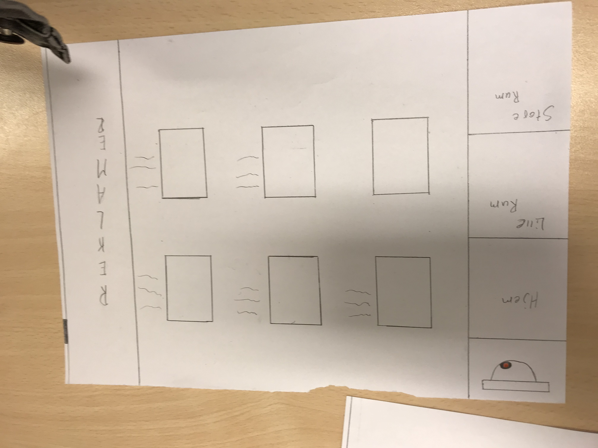
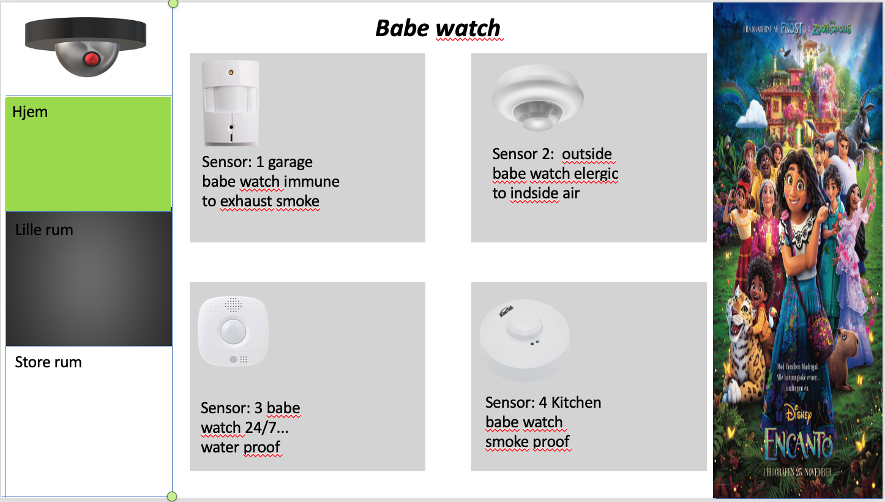

Design af IT-systemer
De 5 principper er:
1. Contrast
2. Repetition
3. Alignment
4. Proximity
5. White space
Her er eine link:
https://w3-lab.com/5-core-principles-graphic-design-rules/
ASSESS:
Her er en liste af forskellige metoder:
1) Interviews (snak med brugerne)
2) Observations (kig på brugerne)
3) Surveys (giv brugerne spørgeskemaer)
4) User Testing (få brugerne til at afprøve produktet)
5) Inspection Methods (kig selv på produktet, som om at du var en bruger)
Det er dog også vigtigt at skelne imellem metoder som:
- kvantitative vs. kvalitative
- Naturalistiske vs. kunstige
DESIGN:
Vi tager det vi har lært og kommer op med ider for hvordan man kan levere et produkt som løser problemet.
Her er en liste over forskellige metoder:
1) Personas, scenarios, User stories
2) Sketching and Ideation
3) Storyboard
4) Brainstorm
BUILD:
Fix problemet!!
Spiralmodellen indeholder de 3 punkter jeg skrev om i Iterative design afsnittet.
Denne spiral fortsætter i en ond cirkel indtil man er tilfred eller har opnået det mål man gerne ville.

Vi startetede ud med at skulle finde et produckt som vi kunne lave digitalt. Vi endte med at have et fokus på skolens strøm forbrug med lamper.
Vi talte det til at der var omkring 15 lamper i vores lokale, vi valgte så at sige at hvert lokale havde ca. 12 lamper. Vi kiggede på lectio og kom frem til at der var ca. 70 lokaler at tage højde for. efter følgende talte vi så lamperne i gangene og i salende.
Vi fandt frem til at en pære på skolen brugte ca. 18 watt i timen. 1kW koster 2,4 kroner, hvilket vil sige at en lampe bruger .... i timen. vi går ud fra at lamperne er tændt omkring 12 timer om dagen i 200 dage. når vi lægger alle talene sammen for vi en pris på over 110.000kr om året.
Vores har vi så tænkt os skulle være, en hjemmeside hvor du kan købe sensore til gange og lokaler på skolen. disse sensore skulle så gøre at lyset er tændt når der er nogen, og det ellers er slukket
Her har vi så lavet en skecth af hjemmesiden


Vi har derfter også lavet et senarie som muligvis kan bruges
En skole har 70 lokaler med gennemsnitlig cirka 12 lamper i et lokale, og en masse andre på gange og fællesrum. En gennemsnitlig lampe bruger cirka 4 øre i timen. Skolen er ikke så god til at for slukket deres lamper, så de kan nemt være tændt i 12 timer på en skole dag. Om året ender det med at koste en masse penge.
Vi skulle så begynde at lave en prototybe af vores ide. Vi mente ikke at vi kunne nå at lave en hjemmeside med den tid vi have, så i stedet for lavet vi et power point som vi mente det skulle se ud.
